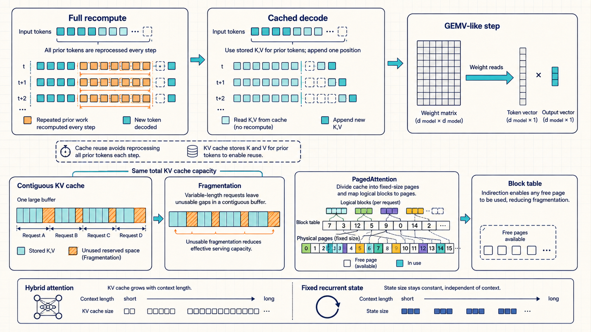
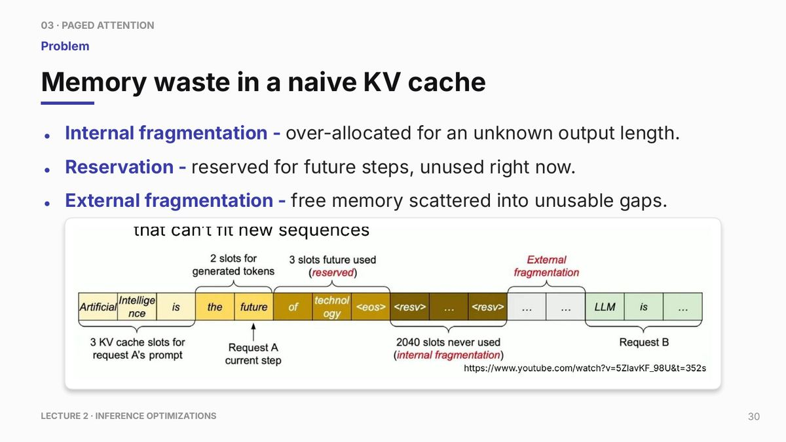

9 Decode and KV Cache
Optimize the memory-bound token generation loop using KV cache layout and PagedAttention.
Decode optimization focuses on the repeated one-token step. A small inefficiency in one step becomes large when repeated for thousands of generated tokens across many active requests. Decode is therefore a scheduling, memory-layout, and cache-management problem as much as a model-forward problem.
The key-value cache avoids recomputing the full prefix, but it also becomes the largest dynamic memory object in long-context serving. Cache layout determines whether decode kernels read memory efficiently. Allocation policy determines how many requests can be admitted without waste.
A useful diagnostic path compares naive recomputation with cached decode, inspects weight and KV traffic, and then tests launch, layout, paging, or batching changes against the measured limit. A more elaborate path is not automatically faster: metadata, indirection, compilation, and scheduling overhead can outweigh its benefit for small workloads.
The KV cache avoids recomputing old key and value projections. It does not make standard attention independent of context length, because each new query still attends to stored positions.

The allocation panels separate logical token order from physical placement. Contiguous reservation can waste free space between requests; a block table can map logical blocks to non-contiguous physical blocks, trading less over-reservation for metadata, indirection, and final-block waste. Fixed recurrent state is a different model design, not another KV layout.
9.1 Decode loop anatomy
Autoregressive generation starts with prefill and then repeats one decode step for each new token. A naive loop may rerun the model over the growing prefix; the amount of repeated token-layer work then grows roughly quadratically with generated length, while repeatedly recomputing full attention can grow more steeply. A cached loop stores key and value states so earlier token representations are not rebuilt:
Example: Cached decode loop. This example shows the basic decode dependency. Each step consumes the previous token and cached attention state, produces logits, chooses the next token, and updates the cache.
Code example: Cached decode loop
# What this code shows:
# - The first call processes the prompt and creates the initial cache.
# - Later calls process only the newest token but read the existing cache.
# - The loop is serial at the sequence level, so per-step overhead matters.
# - A production engine batches many such loops together.
#
import torch
@torch.inference_mode()
def cached_decode(model, input_ids, max_new_tokens):
out = model(input_ids, use_cache=True)
past = out.past_key_values
token = out.logits[:, -1].argmax(dim=-1, keepdim=True)
generated = [token]
for _ in range(max_new_tokens - 1):
out = model(token, past_key_values=past, use_cache=True)
past = out.past_key_values
token = out.logits[:, -1].argmax(dim=-1, keepdim=True)
generated.append(token)
return torch.cat(generated, dim=1)The cached decode loop separates the first prefill pass, where use_cache=True initializes past_key_values, from subsequent decode steps. During decode, the model accepts only the newest token plus the existing cache, produces logits for the next token, and appends new key/value states. Caching avoids recomputing the full prefix, but attention over the cached history still reads state that grows with context length. The result is often a bandwidth-sensitive workload, not a constant-cost operation.
9.2 Recompute and cache reuse
Decode implementations trade one cost for another. The three variants below move from recomputation to persistent state and then to runtime-managed execution, but their ranking depends on request size, batch, cache pressure, and implementation overhead.
- Naive decode: Every new token recomputes attention over the whole prefix from scratch. It is simple but quickly becomes wasteful because history is processed repeatedly.
- Cached decode: The model stores key and value tensors from previous tokens. Each new step processes only the newest token and attends to cached history, trading recomputation for persistent memory reads.
- Optimized decode: The serving stack reduces launch overhead, improves batching, lays out cache reads efficiently, pages KV memory, and avoids allocator churn.
- Main trade-off: Caching reduces compute but creates a large dynamic memory object. Optimizing decode is therefore both a kernel problem and a memory-management problem.
This progression explains why a cached loop can be much faster than naive recomputation while still performing poorly in production. Once recomputation is gone, decode is often limited by reading weights and KV cache, maintaining enough active sequences, and launching repeated small steps without CPU gaps.
9.3 GEMV-like behavior in decode
GEMV means General Matrix-Vector multiply. GEMM means General Matrix-Matrix multiply. The distinction matters because matrix-matrix work reuses loaded weights across many output columns, while matrix-vector work often reads many weights for only one or a few token vectors.
- GEMV-like decode: A small-batch decode step multiplies large projection matrices by one or a few token vectors. Weight reuse is low, so arithmetic intensity is low.
- GEMM-like prefill: Prompt processing uses many token positions at once, so the same weights can be reused across a larger matrix of activations. This is usually better for tensor-core utilization.
- Bandwidth implication: Small-batch decode may be dominated by reading model weights and KV cache rather than by raw arithmetic throughput.
- Batching implication: Continuous batching and grouped requests can make the decode step less vector-like by increasing useful work per launch, but they are constrained by latency and KV-cache capacity.
This is why a model can have high theoretical FLOP/s during prefill and still produce slow tokens during decode. Workload shape and model size together determine whether the GPU sees a compute-rich GEMM or a bandwidth-sensitive GEMV-like path.
9.4 Key-value cache layout
Key-value cache layout is the physical organization of cached key and value tensors in GPU High Bandwidth Memory (HBM). It specifies how layers, sequences, token positions, heads, and head dimensions are ordered, and how the serving engine finds the cache blocks for each active request during attention.
- Layer dimension: Each transformer layer stores its own key and value tensors because attention state is layer-specific.
- Sequence and token dimensions: The cache must preserve token order for each request, even when physical blocks are not contiguous.
- Head and head-dimension layout: The arrangement of KV heads and per-head vector elements affects whether attention kernels can read contiguous addresses.
- Append path: Every generated token adds new keys and values. The layout must make this write path cheap enough for repeated decode steps.
- Read path: Every decode step rereads prior keys and values for attention. This read path is often more important than append cost for long contexts.
- Block table: Paged layouts add metadata mapping logical token blocks to physical cache blocks, trading lookup indirection for lower memory waste.
A cache layout should support coalesced reads by attention kernels, efficient append of new keys and values, and fast lookup for each active sequence. Grouped-query attention reduces the number of key-value heads and therefore cache size. Quantizing the cache can reduce bandwidth, but only if the attention path supports the format efficiently.
In KV cache, cache means serving state stored for reuse across decode steps. KV blocks usually reside in HBM and are repeatedly read by attention kernels during decode. Hardware L2 may help with locality for nearby or repeated accesses, while long-context decode often streams through more KV data than hardware cache can retain. The reliable optimization objects are KV layout, block size, paging policy, attention-kernel tiling, and request locality.
9.5 PagedAttention
PagedAttention is a KV-cache management technique that maps logical token blocks in a sequence to reusable physical KV-cache blocks in GPU memory. The idea is similar to virtual memory: a request sees an ordered logical sequence, while the engine is free to place the underlying physical blocks wherever capacity is available.
The problem is variable sequence length. If an engine reserves one large contiguous KV region for the maximum possible output length of every request, short completions leave unused space and long-running service can fragment memory. Paging reduces this waste by allocating fixed-size blocks on demand.
The empty regions represent capacity wasted by a naive policy that reserves a maximum-length contiguous KV region for each request. Other contiguous allocators may reserve less and have different waste patterns.

Paging allocates reusable physical blocks on demand and reduces fragmentation and tail waste. It does not remove all waste: partially filled final blocks, block tables, metadata work, and indirect kernel addressing remain.
The block table is the central mechanism. A request sees a logical sequence of KV blocks: block 0, block 1, block 2, and so on. The engine maps those logical blocks to physical blocks in GPU memory. For example, request A may map logical blocks [0, 1, 2] to physical blocks [7, 2, 15]. Attention kernels use this mapping to gather the right keys and values even though the physical allocation is non-contiguous.
Blocks are allocated on demand as tokens are generated. This reduces waste because the engine does not need to reserve the maximum possible output length for every request at admission time. In the ideal case, all full blocks are packed and only the final block of an active sequence is partially empty. The trade-off is indirection: every request needs block-table metadata, and kernels or scheduler code must resolve logical positions to physical blocks.
| Dimension | Contiguous allocation | PagedAttention-style allocation |
|---|---|---|
| Memory reservation | Often reserves for maximum or estimated length | Allocates fixed-size blocks as needed |
| Fragmentation | Can waste space for short outputs | Reduces waste through block reuse |
| Lookup | Simple pointer arithmetic | Block-table indirection |
| Scheduler complexity | Lower | Higher, because block assignment must be tracked |
Paged allocation is most useful when variable request lengths make contiguous reservation waste enough HBM to limit admission. It changes cache allocation and lookup, not the attention formula, so kernel efficiency, scheduler fairness, and prefix-cache correctness remain separate measurements.
Example: PagedAttention block lookup. This pseudocode shows the mapping idea without tying it to a particular engine implementation. The key point is that logical sequence positions are resolved through a block table before the attention kernel reads KV memory.
Code example: PagedAttention block lookup
# What this code shows:
# - The request grows in logical token order.
# - Physical KV blocks do not need to be contiguous.
# - The attention path pays an indirection cost to reduce allocation waste.
# - Paging improves memory management, not the arithmetic complexity of attention.
#
block_size = 16
# request A: logical block -> physical KV block
block_table = {0: 7, 1: 2, 2: 15}
def physical_location(token_index):
logical_block = token_index // block_size
offset = token_index % block_size
physical_block = block_table[logical_block]
return physical_block, offsetThe pseudocode implements only metadata translation from a logical token position to a physical block and offset. A complete implementation also accounts for layer, KV head, vector dimension, append writes, vectorized reads, and the attention kernel that consumes the resolved addresses.
9.6 Hybrid attention and SSM-style serving state
Hybrid serving state refers to models that do not use the same attention KV-cache pattern in every layer. Some layers may use transformer attention and store token history as keys and values, while state-space or recurrent-style layers carry compact state that updates over time.
The useful comparison is scaling behavior rather than a single pair of sizes. Attention KV state grows with stored token positions, while a recurrent state remains sequence-length-independent for a fixed layer, model, and batch. The recurrent state is a compressed summary, not a collection of individually addressable past-token records, so equal byte counts would not imply equal information or recall behavior.
Transformer attention layers store keys and values for prior tokens, so their serving state grows with sequence length. State-space model (SSM) or recurrent-style layers maintain a compact hidden state that is updated as tokens arrive. Hybrid architectures combine these ideas: attention layers still need KV cache, while SSM-style layers carry fixed-size recurrent state.
This changes long-context decode economics. If fewer layers require full KV history, memory pressure and HBM reads can be lower. However, the implementation burden moves elsewhere: state scans, chunked updates, custom kernels, cache invalidation rules, and prefix reuse all need architecture-specific handling.
Mamba-style models are the usual reference point for this serving pattern. They can reduce the dominance of attention KV cache in long-context decode, but they do not remove the need for careful kernel design. Scan kernels, chunking, and state layout become the new performance-critical objects.
9.7 Worked decode reasoning path
Finding a decode bottleneck means checking the one-token path in a fixed order. The goal is to avoid applying an engine-level feature before proving which bottleneck is exposed.
- Step 1: compare naive and cached decode: If caching barely helps, the implementation may not be using the cache correctly or may be dominated by something outside attention recomputation.
- Step 2: inspect the per-token trace: GPU gaps suggest launch overhead, Python scheduling, or engine control-plane cost. High HBM traffic with busy kernels suggests a bandwidth-bound decode path.
- Step 3: stabilize the single-worker loop: Use compilation or CUDA Graph replay when shapes and memory addresses are stable enough and profiler traces show launch-bound behavior.
- Step 4: increase useful batch carefully: Continuous batching can recover utilization, but only while TTFT, TPOT, and cache capacity remain within the service target.
- Step 5: fix cache memory pressure: PagedAttention, prefix reuse, grouped-query attention, or KV-cache quantization become relevant when cache allocation or HBM bandwidth limits admission or latency.
The resulting optimization sequence is workload-specific. A short-output chatbot, a long-context retrieval system, and a high-throughput batch generator can expose different decode bottlenecks even with the same model.
These changes still operate inside one worker’s decode and cache path. Chapter 10 adds the serving-engine policies that decide which requests advance together, which prefixes are reused, and how prefill, decode, and speculative verification share GPU time.